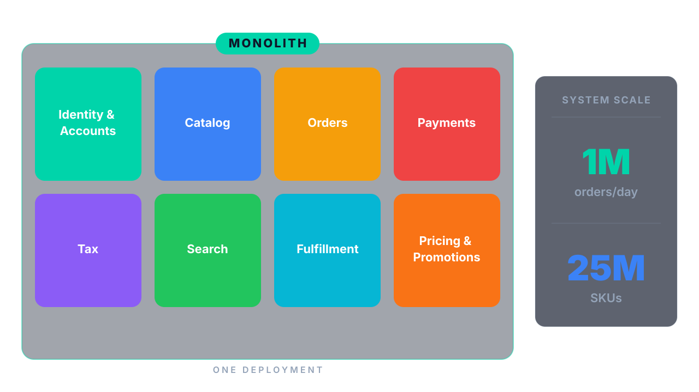
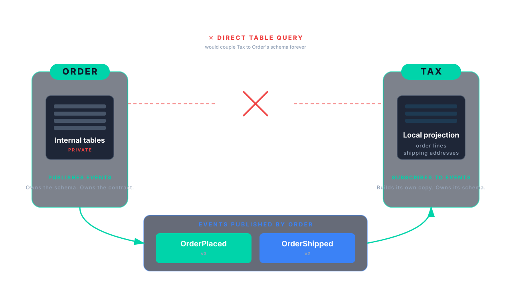

LDX3 London · June 2026
Your problem isn't the monolith.
It's the data.
Pramod Sadalage · Distinguished Engineer, Thoughtworks
Six years of monolith. Eighteen months of microservices.
Same engineers. Same data. Different outcome.
Architecture endures when teams align on data lifecycles, not just APIs.
Rot doesn't start at the deployment boundary
It starts at the schema
Anyone writes to any table.
No ownership at the persistence layer.
Cross-domain joins in hot paths.
Latency follows your worst dependency.
Lifecycle and retention rules applied inconsistently.
Data outlives the rules that govern it.
Teams share a database but not a vocabulary.
One schema, many implicit meanings.
If your data is shared, your architecture is shared.
Whatever the org chart says.
Penultimate Markets, 2022. One deployment. 120 engineers. 8 markets.

Aggregates own their invariants.

What this looks like in practice
WRONG
// Tax module mutating Order's data directly
orderRepository.findById(id).getLines()
.forEach(line -> line.setTaxRate(rate));
RIGHT
// Tax sends a command. Order owns the transition.
orderService.applyTaxes(orderId, taxBreakdown);
// inside Order aggregate:
// validates state, applies rule, emits event
Other teams consume contracts, not tables.

The contract is the boundary.
OrderPlaced:
version: 3
fields:
orderId: UUID
customerId: UUID
placedAt: timestamp
lines: [OrderLine]
shippingAddress: Address
currency: ISO4217
Discipline is not a wiki page.
It's CI exit code 1.
Fitness functions for data boundaries.
@AnalyzeClasses(packages = "com.penultimate")
public class DataBoundaryFitnessFunctions {
@ArchTest
static final ArchRule no_cross_domain_persistence_access =
noClasses().that().resideInAPackage("..tax..")
.should().accessClassesThat()
.resideInAPackage("..orders.persistence..")
.because("Tax reads OrderPlaced events. Tax does not query Order's tables.");
@ArchTest
static final ArchRule writes_only_via_aggregate_root =
noClasses().that().resideOutsideOfPackage("..orders.domain..")
.should().callMethod(OrderRepository.class, "save", Order.class)
.because("Order's invariants live in Order. No exceptions.");
@ArchTest
static final ArchRule events_versioned_and_immutable =
classes().that().areAnnotatedWith(DomainEvent.class)
.should().haveSimpleNameEndingWith("V1")
.orShould().haveSimpleNameEndingWith("V2")
.andShould().haveOnlyFinalFields();
}
Other fitness functions you'll add
- Schema migration linter (expand/contract enforcement)
- Contract stability test (Pact, schema-registry compatibility)
- Cross-aggregate join detector (SQL log analysis or query plan inspection)
- Event schema validation (in CI, against registry)
- Lifecycle/retention assertions (per-table TTL declared, enforced)
The monolith doesn't fail.
It stops fitting.
The pressure was not traffic. It was lifecycle.
Search
Read-heavy
Low-latency
Regional
Eventually consistent
Tax
Immutable
7-year retention
Audit
Regulatory
Payments
Isolated failure domain
Stricter SLA
PCI scope reduction
Same colors. Same domains. Same teams.
Before (Year 4)

After (Year 7)

Aggregates become extraction boundaries.

Same contract. Bigger blast radius.

Process managers replace transactions.

Duplication owned by a contract is not debt.
It's autonomy.
Tax keeps its own copy of order line items. Search keeps its own denormalized catalog projection. Both update from events; both own their schema.
The discipline is portable.
// Year 4 rule:
// "Tax doesn't access Order's persistence package."
// Year 7 rule:
@ArchTest
static final ArchRule tax_only_consumes_versioned_order_events =
classes().that().resideInAPackage("..tax.consumer..")
.should().onlyDependOnClassesThat()
.areAnnotatedWith(VersionedDomainEvent.class)
.because("Tax consumes events. Tax does not call Order's APIs.");
Decomposition wasn't a flag day. It was four moves over three years.
Each one obvious, because the seams were already drawn in the data.
One reason this matters more in 2026 than in 2022.
of agent tool interaction paths show data over-exposure.
AgentRaft, 2026 (n=6,675 real-world agent tools). ThoughtWorks Tech Radar Vol 33, Nov 2025: "Naive API-to-MCP conversion" on Hold.
MCP is the wire format. Your data product is the contract.
architectural design flaws (+153%) and privilege escalation paths (+322%) in AI-assisted code.
Apiiro Fortune 50 telemetry, 2025. 4× more commits. Fewer, larger PRs.
CLAUDE.md is advisory. CI is deterministic. Build the deterministic layer.
arXiv 2603.26244 (2026): LLM-led DDD nailed glossary and context maps; bounded contexts and aggregates degraded by step 5. Production pattern at LinkedIn, Visa, Netflix via Acryl/DataHub.
Use it to scale the boring parts. Keep humans on the seams.
Monday actions
Your monolith will stay modular longer.
Your decompositions will be evolutionary, not traumatic.
Thank you.